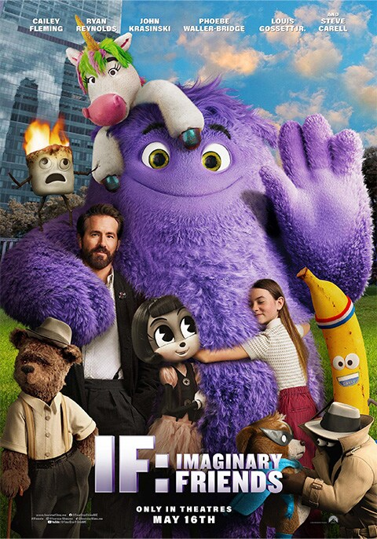

IF: IMAGINARY FRIENDS
Synopsis: From writer and director John Krasinski, IF is about a girl who discovers that she can see everyone’s imaginary friends — and what she does with that superpower — as she embarks on a magical adventure to reconnect forgotten IFs with their kids. IF stars Ryan Reynolds, John Krasinski, Cailey Fleming, Fiona Shaw, and the voices of Phoebe Waller-Bridge, Louis Gossett Jr. and Steve Carell alongside many more as the wonderfully unique characters that reflect the incredible power of a child’s imagination.Actors: Ryan Reynolds, John Krasinski, Fiona Shaw, Cailey Fleming
Age Restriction: PG-13
Showing Times: 12:00, 15:00, 18:00